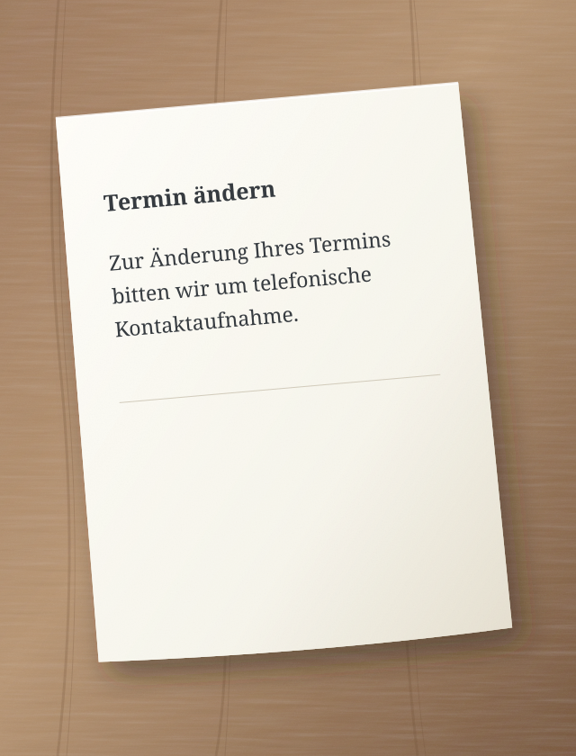
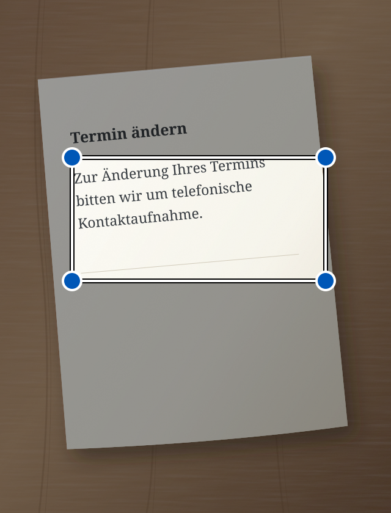

Ein Behördenbrief, eine lange Nachricht, eine komplizierte Anleitung. Sedno hilft dir, sie mit einfacheren Worten zu verstehen. Es kann auch Fehler in deinem Text korrigieren und ihn vorlesen.
Zur Änderung Ihres Termins bitten wir um telefonische Kontaktaufnahme.
↳ Vereinfachter Text
Du möchtest deinen Termin ändern? Ruf uns an.
Beispiel zur Veranschaulichung einer Vereinfachung.
Leichter verstehen. Leichter handeln.
Einfache Sprache ist für alle da.
Wir entwickeln Sedno vor allem für schwerhörige Menschen und Menschen, denen komplexe Texte schwerfallen. Einfachere Wörter können uns allen helfen.
Von Wörtern zum Sinn
Zwei einfache Schritte.
01
Text hinzufügen
Schreibe, füge Text ein, mache ein Foto oder sprich.
02
Vereinfachen oder korrigieren
Wähle, was du brauchst. Das Ergebnis erscheint im selben Feld. Du kannst es weiter bearbeiten.
i Die KI kann Fehler machen. Prüfe wichtige Informationen im Original.
Sieh, wo du drücken musst
Sedno Schritt für Schritt.
Jedes Beispiel zeigt eine Aufgabe. Ein Kreis zeigt, wo du drücken musst. Ein Pfeil zeigt, was danach passiert.
Dies sind vereinfachte Zeichnungen der Bildschirme. Die Texte sind Beispiele. Die App kann etwas anders aussehen.
Geschriebenen Text vereinfachen
Eine schwierige Nachricht? Schreibe sie in Sedno oder füge sie ein.
1 Schreibe den Text und drücke „Vereinfachen“.
Der Modus Vereinfachen sollte gewählt sein.
Sedno – Text vereinfachen:
Zur Änderung Ihres Termins bitten wir um telefonische Kontaktaufnahme.
Vereinfachen
2 Lies den einfacheren Text.
Das Ergebnis erscheint im selben Feld. Du kannst es bearbeiten.
Vereinfachter Text
Du möchtest deinen Termin ändern? Ruf uns an.
Die KI kann sich irren
Vereinfachen
Text aus einem Foto vereinfachen
Ein Brief auf Papier? Mache ein Foto in Sedno.
1 Drücke auf die Kamera.
Die Kamera in der App öffnet sich.
Sedno – Text vereinfachen:
Text schreiben oder einfügen
Vereinfachen
2 Drücke „Foto aufnehmen“.
Halte das Telefon so, dass die ganze Seite und der Text gut zu sehen sind.
Text fotografieren

Foto aufnehmen
3 Markiere den Text und drücke „Vereinfachen“.
Ziehe die Rahmenecken um den Text, den du vereinfachen möchtest.
Text markieren
Verschiebe die Rahmenecken, um den Text zu markieren.

Vereinfachen
4 Lies den einfacheren Text.
Sedno liest den Text aus dem Foto und vereinfacht ihn.
Vereinfachter Text
Du möchtest deinen Termin ändern? Ruf uns an.
Die KI kann sich irren
Vereinfachen
Das Foto bleibt auf deinem Telefon. Nur der erkannte Text wird an die KI gesendet. Schlägt die Vereinfachung fehl, bleibt der Text im Feld und du kannst ihn bearbeiten.
Gesprochenes vereinfachen
Du möchtest lieber sprechen? Wähle den Modus Vereinfachen.
1 Drücke auf das Mikrofon.
Erlaube den Mikrofonzugriff, wenn dein Telefon danach fragt.
Sedno – Text vereinfachen:
Text schreiben oder einfügen
Vereinfachen
2 Sprich den Text laut.
Sprich in der gewählten Sprache. Mache am Ende eine kurze Pause.
Sprich in der gewählten Sprache
Sedno wandelt Sprache in Text um.
3 Lies den einfacheren Text.
Nach 1,5 Sekunden Stille vereinfacht Sedno den erkannten Text automatisch.
Vereinfachter Text
Du möchtest deinen Termin ändern? Ruf uns an.
Die KI kann sich irren
Vereinfachen
Sprache wird auf deinem Telefon erkannt. Du brauchst Android 13 oder neuer, ein kompatibles Gerät und ein heruntergeladenes Modell für die gewählte Sprache. Die Aufnahme dauert höchstens eine Minute. Stopp bricht die Aufnahme ab.
Geschriebenen Text korrigieren
Du möchtest Fehler korrigieren? Wähle vor dem Schreiben den Modus Korrigieren.
1 Schreibe den Text und drücke „Korrigieren“.
Wechsle den Modus mit den Pfeilen über der großen Taste.
Sedno – Text korrigieren:
ich kan morgen nicht zum trefen kommen
Korrigieren
2 Lies den korrigierten Text.
Sedno korrigiert Fehler. Prüfe, ob der Text sagt, was du meinst.
Korrigierter Text
Ich kann morgen nicht zum Treffen kommen.
Die KI kann sich irren
Korrigieren
Korrigierten Text anhören
Im Modus Korrigieren kann dein Telefon den Text im Feld vorlesen.
1 Drücke auf den Lautsprecher.
Korrigiere zuerst den Text. Drücke dann links auf den Lautsprecher.
Korrigierter Text
Ich kann morgen nicht zum Treffen kommen.
Die KI kann sich irren
Korrigieren
2 Höre dir den Text an.
Das Telefon liest vor. Die Stopptaste beendet das Vorlesen.
Dein Telefon liest vor
Höre den Text von deinem Telefon.
Das Vorlesen erfolgt auf deinem Telefon. Lade in den Telefoneinstellungen eine Offline-Stimme für die gewählte Sprache herunter.
Sprache
Wähle deine Sprache.
Sedno unterstützt 13 Sprachvarianten. Öffne in der App das Menü und wähle Sprache. Die Auswahl gilt auch für Text, Diktieren und Vorlesen. Sedno vereinfacht und korrigiert; es übersetzt nicht zwischen Sprachen.
Deine Texte. Deine Kontrolle.
Datenschutz von Anfang an.
Fotos und Ton bleiben auf dem Telefon. Nur Text wird an die KI gesendet.
Text aus Fotos wird auf dem Gerät erkannt. Das Foto selbst wird nicht gesendet.
Ton bleibt bei dir
Dein Telefon erkennt Sprache und liest Text lokal vor. Sedno sendet keinen Ton an seinen Server oder OpenAI. Nur erkannter Text wird zur Vereinfachung gesendet.
Die KI verarbeitet Text
Text zum Vereinfachen oder Korrigieren geht über den Server an OpenAI. Der Sedno-Server speichert den Inhalt nicht.
Verlauf für 7 Tage
Der verschlüsselte Verlauf bleibt nur auf deinem Gerät, für 7 Tage. Du kannst ihn früher löschen. Abmelden löscht den Verlauf vom Telefon.
Sedno
Damit Wörter Menschen näherkommen.
Die App ist in der Testphase. Nach der Veröffentlichung findest du hier einen Download-Link.